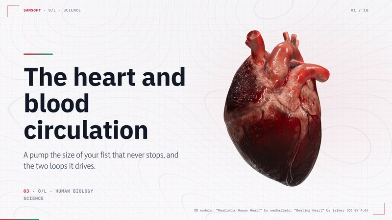
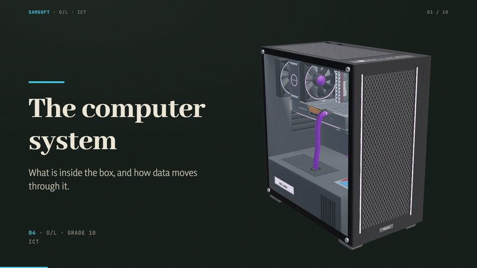
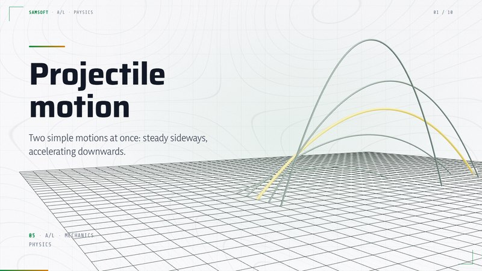
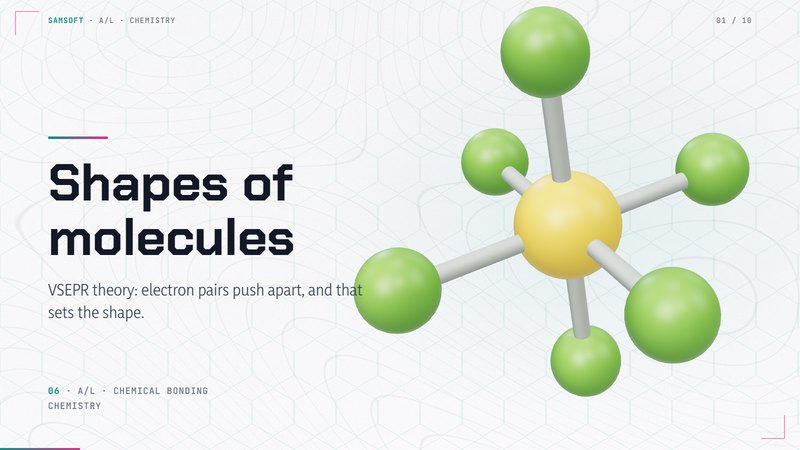
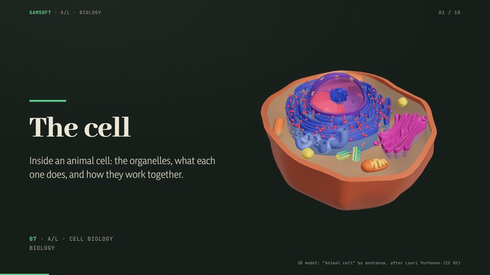
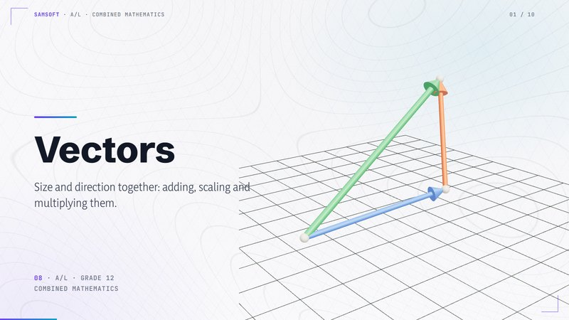

Lessons you can
turn in 3D.3D වලින් කරකවා
පෙන්විය හැකි පාඩම්.
Ten-slide lesson decks for the classroom screen or projector. Models you can turn, sliders, simulations and paper-style questions, in English and Sinhala.පන්ති තිරයට හෝ ප්රක්ෂේපකයට සකස් කළ, slides දහයක පාඩම් decks. කරකවන්න පුළුවන් models, sliders, simulations සහ ප්රශ්න පත්ර ආකාරයේ ප්රශ්න, ඉංග්රීසි සහ සිංහල දෙකෙන්ම.

The solar systemසෞරග්රහ මණ්ඩලය
Real-texture planets, day and night over Sri Lanka, Moon phases and Poya.සැබෑ textures සහිත ග්රහලෝක, ලංකාවට දිවා රෑ, සඳේ කලා සහ පොහොය.

Surface area and volumeපෘෂ්ඨ වර්ගඵලය සහ පරිමාව
A cylinder that unrolls into its net, three cones that fill a cylinder.දැලක් බවට දිග හැරෙන සිලින්ඩරය, සිලින්ඩරයක් පුරවන කේතු තුන.

Heart and blood circulationහෘදය සහ රුධිර සංසරණය
A real heart in 3D, cut open and beating, one drop of blood followed through it, double circulation.3D සැබෑ හෘදයක්, කපා විවෘත කළ ස්පන්දනය වන හෘදය, එය හරහා රුධිර බිඳුවක ගමන, ද්විත්ව සංසරණය.

The computer systemපරිගණක පද්ධතිය
A detailed PC that comes apart, a CPU with its lid lifted, the machine cycle.කොටස් වෙන් වන PC එකක්, ආවරණය ඉවත් කළ CPU එකක්, යන්ත්ර චක්රය.

Projectile motionප්රක්ෂිප්ත චලිතය
A launch simulator with Earth and Moon gravity, and why 45° goes furthest.පෘථිවි සහ සඳ ගුරුත්වය සහිත simulator එක, 45° උපරිම දුර යන්නේ ඇයි.

Shapes of moleculesඅණුවල හැඩය
VSEPR in 3D, from BeCl₂ to XeF₄, with the real bond angles.BeCl₂ සිට XeF₄ දක්වා VSEPR 3D වලින්, නියම බන්ධන කෝණ සමඟ.

The cellසෛලය
An animal cell cut open in 3D, every organelle explained, one protein followed out of the cell.3D වලින් කපා විවෘත කළ සත්ත්ව සෛලයක්, සෑම ඉන්ද්රියිකාවක්ම පැහැදිලි කිරීම, ප්රෝටීනයක් සෛලයෙන් පිටතට යන ගමන.

Vectorsදෛශික
Drag the arrows: components, the triangle law, position vectors, a · b.ඊතල ඇදගෙන යන්න: සංරචක, ත්රිකෝණ නීතිය, පිහිටුම් දෛශික, a · b.

Computer networksපරිගණක ජාල
Cables and devices in 3D, topologies you can break, live IP and subnet maths.3D රැහැන් සහ උපාංග, කැඩිය හැකි ස්ථලක, IP සහ subnet ගණනය.